Sección de Niños
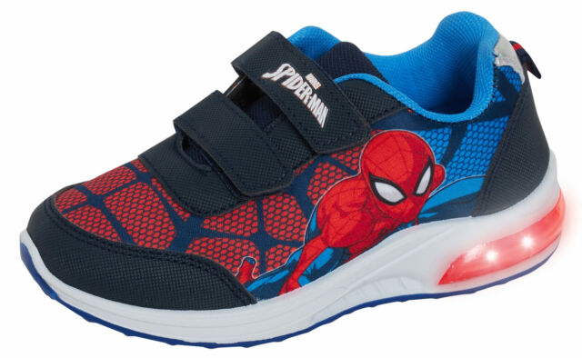
Zapatos con Tematica de Spider-Man
zapatos temática deSpider-Man son ideales para los pequeños fans del superhéroe. Con un diseño colorido y divertido, presentan imágenes vibrantes del personaje en la parte superior. La parte de malla transpirable asegura comodidad.
Comprar Ahora $50.99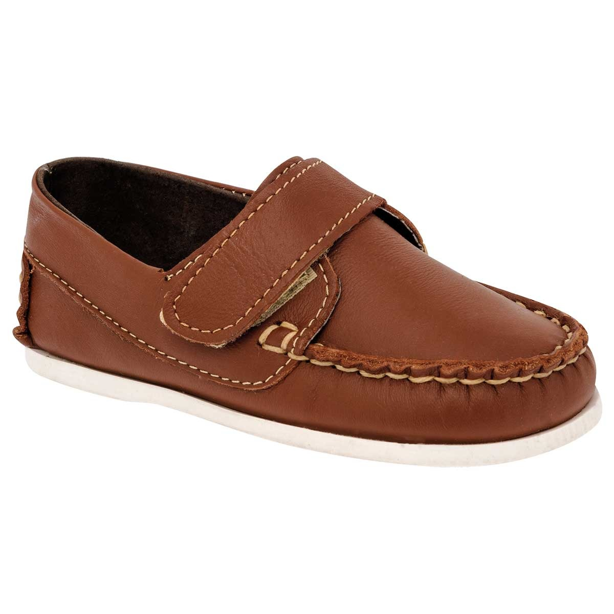
Zapatillas de Cuero
zapatos de cuero para niños combinan estilo y durabilidad. Con un diseño clásico y elegante, están fabricados en cuero de alta calidad que proporciona comodidad y resistencia. La suela flexible permite un buen agarre, ideal para el juego diario.
Comprar Ahora $33.99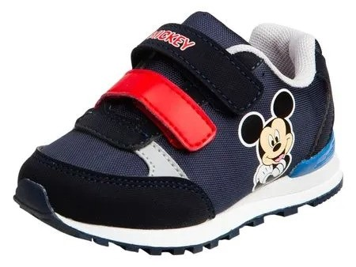
Zapatos de Mikey Mouse
Estos zapatos con temática de Mickey Mouse son perfectos para los pequeños fans del icónico personaje. Con un diseño colorido y divertido, presentan imágenes y detalles de Mickey en la parte superior.
Comprar Ahora $20.99
Zapatos con tematica de Bluey
Estos zapatos de color blanco con temática de Bluey son perfectos para los fans del adorável personaje. Con un diseño alegre y colorido, presentan imágenes de Bluey en la parte superior. La parte de malla transpirable garantiza comodidad, mientras que la suela de goma proporciona tracción y durabilidad. Ideales para el uso diario, añaden un toque divertido a cualquier atuendo infantil.
Comprar Ahora $75.99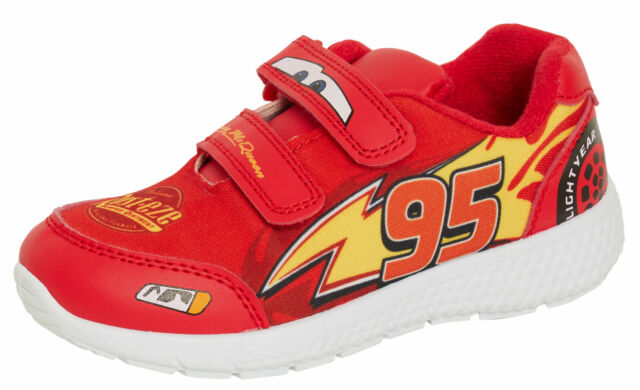
Zapatos Deportivos Cars
Estos zapatos de color rojo tematizados de Cars son ideales para los pequeños aficionados a las carreras. Con un diseño vibrante que presenta imágenes de los personajes de la película, son llamativos y divertidos. La parte de malla transpirable asegura comodidad, mientras que la suela de goma ofrece tracción y durabilidad. Perfectos para el uso diario, añaden un toque emocionante a cualquier atuendo infantil.
Comprar Ahora $80.99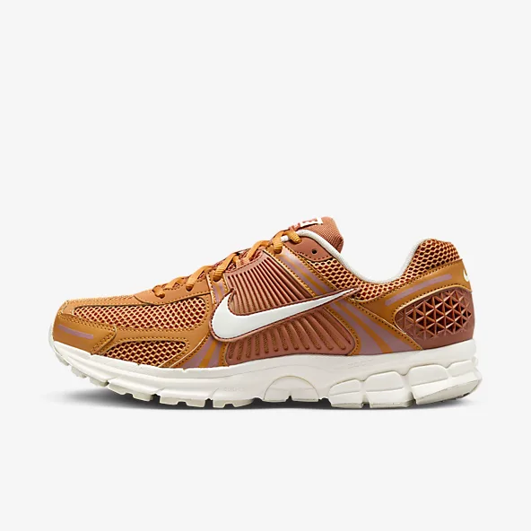
Nike para Niños
Estos Nike color naranja para niños son perfectos para los pequeños deportistas. Con un diseño moderno y vibrante, ofrecen una parte superior de malla transpirable que garantiza comodidad durante todo el día. La suela de goma proporciona excelente tracción y durabilidad, ideal para actividades al aire libre. Perfectos para el uso diario, añaden estilo y energía a cualquier atuendo infantil.
Comprar Ahora $60.99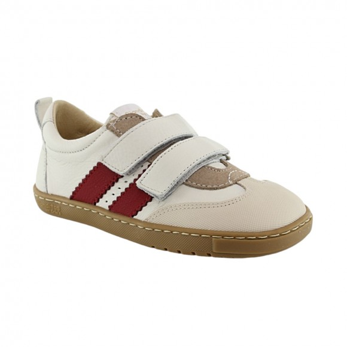
Zapatos Casuales de Color Marron
Estos zapatos casuales de color marrón para niños son ideales para el uso diario. Con un diseño sin agujetas, permiten un calzado rápido y fácil. Fabricados en materiales suaves y duraderos, ofrecen comodidad y soporte. La suela de goma proporciona tracción y estabilidad, perfectos para actividades y juegos. Un complemento práctico y estiloso para cualquier atuendo infantil.
Comprar Ahora $25.99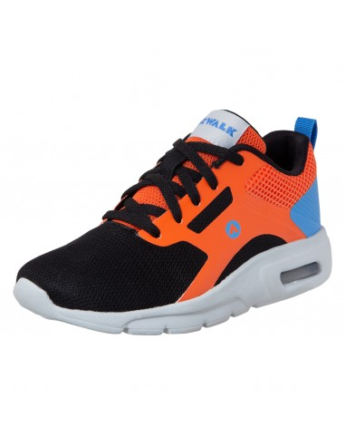
Zapatos Deportivos de color naranja
Estos zapatos deportivos de color naranja son perfectos para quienes buscan estilo y rendimiento. Con una parte superior de malla transpirable, aseguran comodidad y ligereza en cada paso. La suela de goma ofrece excelente tracción, ideal para entrenamientos y actividades al aire libre. Su diseño moderno y vibrante los convierte en una opción atractiva para el uso diario y el deporte.
Comprar Ahora $40.99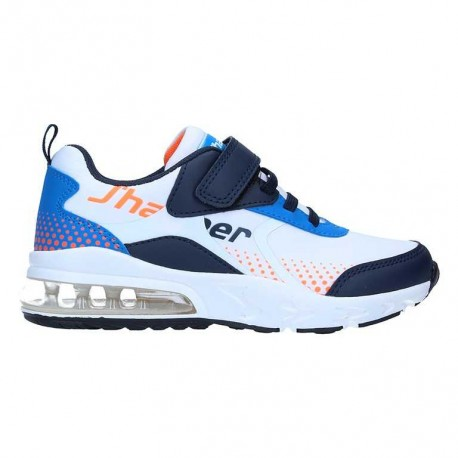
Zapatos Deportivos Color Azul y Blanco
Estos zapatos deportivos de color azul son perfectos para quienes buscan estilo y rendimiento. Con una parte superior de malla transpirable, ofrecen comodidad y ligereza. La suela de goma brinda excelente tracción, ideal para entrenamientos y actividades al aire libre. Su diseño moderno los hace versátiles, perfectos para el uso diario y para complementar cualquier atuendo activo.
Comprar Ahora $23.99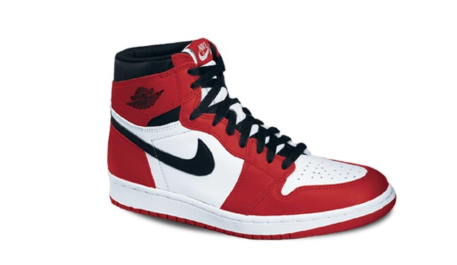
sneakers
Estos sneakers de color rojo y blanco para niños son ideales para un look divertido y activo. Con un diseño moderno, presentan una parte superior de malla que asegura comodidad y transpirabilidad. La suela de goma proporciona buena tracción y durabilidad, perfecta para el juego diario. Su combinación de colores vibrantes los convierte en un complemento atractivo para cualquier atuendo infantil.
Comprar Ahora $250.99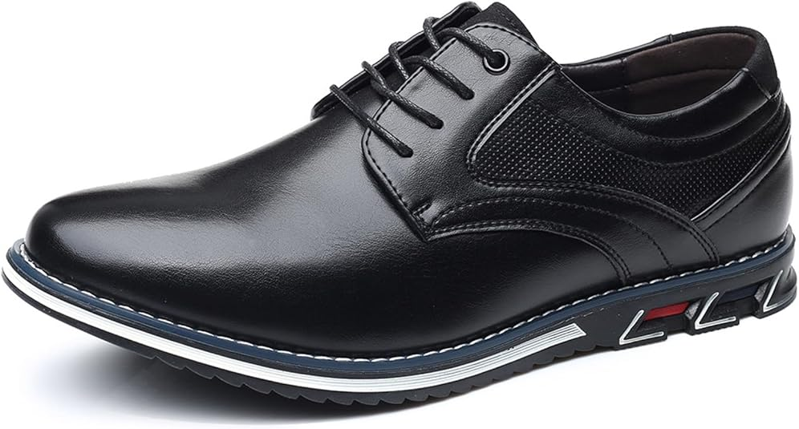
Calzado Elegante
Estos zapatos negros elegantes para niños son perfectos para ocasiones especiales. Con un diseño clásico y sofisticado, están hechos de materiales de alta calidad que aseguran durabilidad y confort. La suela delgada añade un toque refinado, mientras que el interior acolchado garantiza un ajuste cómodo. Ideales para eventos formales, graduaciones o cenas, son un esencial en el armario infantil.
Comprar Ahora $20.99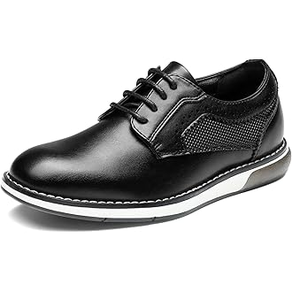
Calzado Negro
Estos zapatos negros con suela doble para niños combinan estilo y comodidad. Su diseño moderno ofrece un soporte adicional, ideal para el juego y actividades diarias. Fabricados en materiales duraderos, cuentan con una parte superior suave y flexible. La suela de goma proporciona tracción y estabilidad, perfectos para cualquier aventura. Un complemento versátil para el armario infantil. la elegancia en colores estilos
Comprar Ahora $20.99